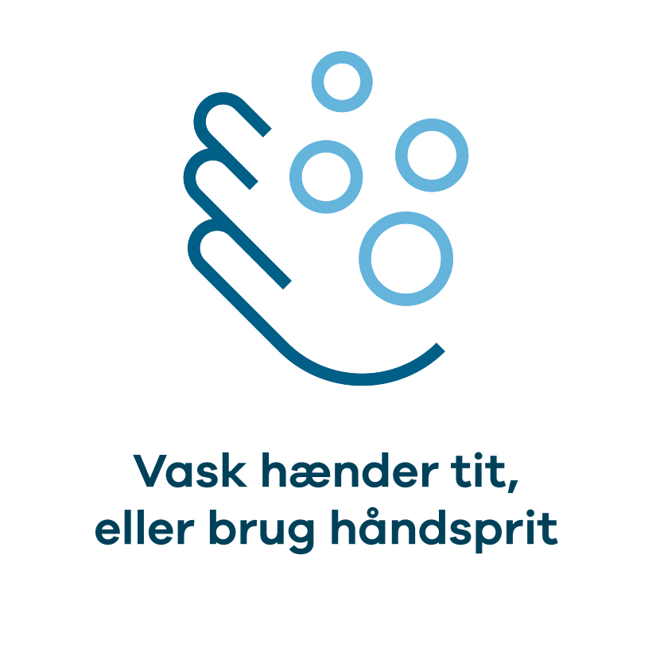
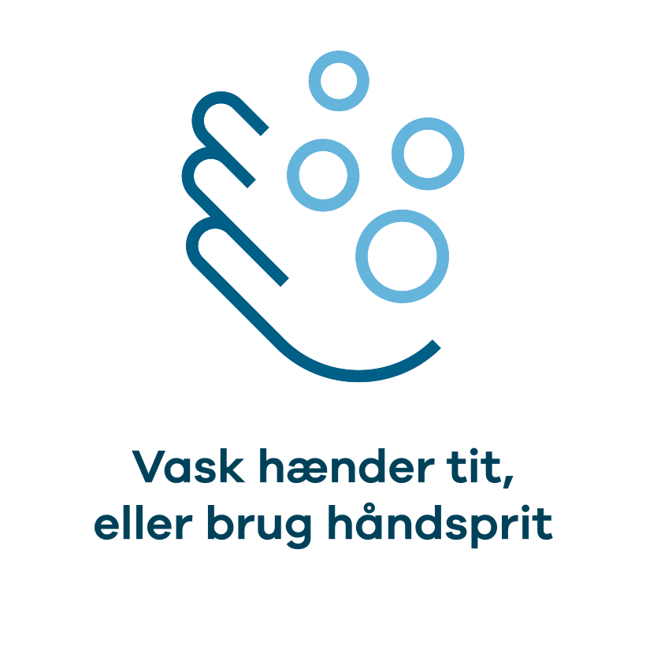

Ny risikovurdering
Hele landet på laveste risikoniveau
Læs hele Epidemikommissionens seneste risikovurdering

Find nærmeste testcenter

Se hvor du kan blive vaccineret
Du kan også læse om:
Vigtigt at vide lige nu

FIND NÆRMESTE CENTER
Her kan du fortsat blive testet

Sådan skal du gøre ved positiv test

Hvad betyder det for test og vaccination?
Den danske del af Coronapas-appen er nu lukket
Husk de 6 gode råd om smitteforebyggelse
Nyheder
Fra venten på vacciner til massevaccination - et tilbageblik på, hvordan covid-19 vaccinationsindsatsen blev organiseret
17-05-2022PCR-testkapaciteten nedskaleres til 20.000 daglige test
16-05-2022Antallet af PCR-tests falder kraftigt
12-05-2022Undersøgelse af bloddonorer viser, at 7 ud af 10 voksne danskere har været smittet med SARS-CoV-2
06-05-2022Nye undervarianter af omikron fundet i flere lande
05-05-2022Overskydende COVID-19-vacciner bliver kasseret
02-05-2022Forebyg smitte


 

Generel information

Kontakt med en smittet person

Smittet med coronavirus

Smittefri

Test for COVID-19

Vaccination

Coronapas

Spørgsmål og svar om COVID-19
Du kan orientere dig i vores spørgsmål og svar-sektion eller kontakte en af myndighedernes hotlines.

Nationalt Kommunikationspartnerskab er de danske myndigheders fælles informationsindsats under COVID-19.
Partnerskabet består af: Sundhedsministeriet, Sundhedsstyrelsen, Styrelsen for Patientsikkerhed, Statens Serum Institut, Lægemiddelsstyrelsen, Justitsministeriet, Rigspolitiet, Styrelsen for Forsyningssikkerhed, Erhvervsministeriet, Erhvervsstyrelsen, Kulturministeriet og Udenrigsministeriet. Øvrige ministerier og myndigheder deltager i partnerskabet efter behov, ligesom partnerskabet samarbejder med andre offentlige aktører som for eksempel kommuner og regioner m.fl.